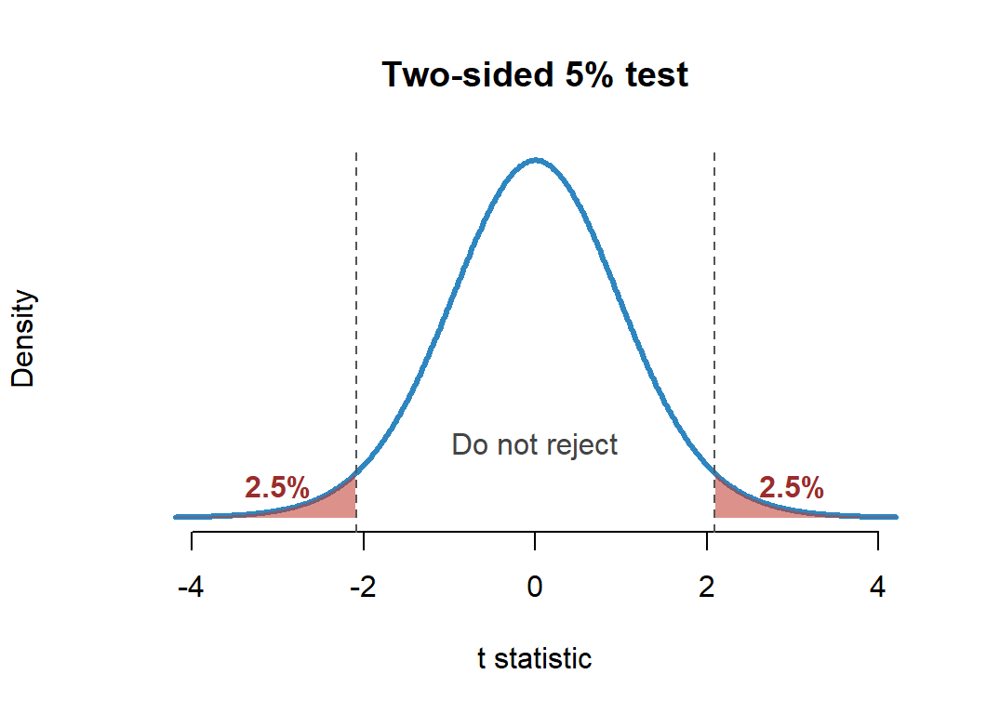
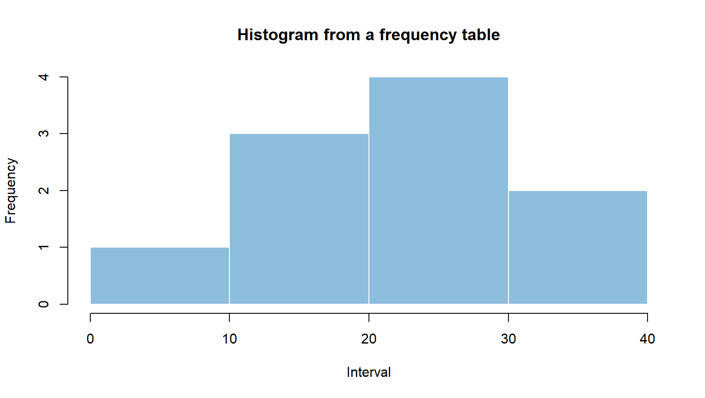
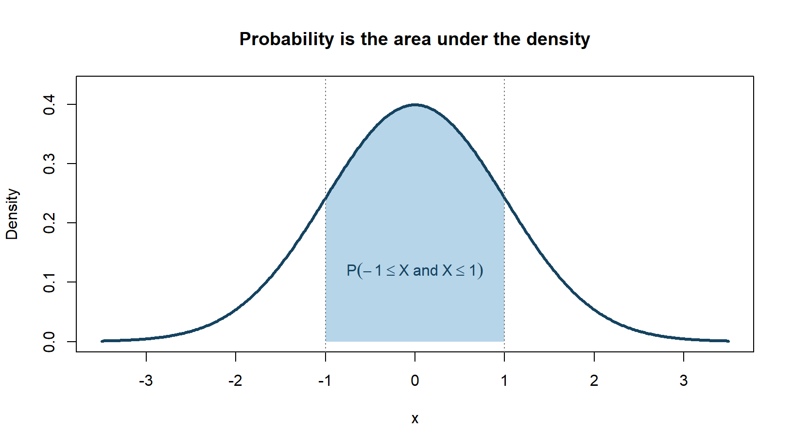
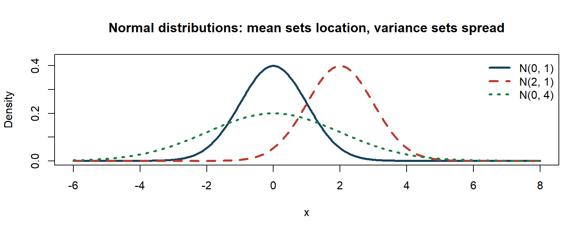
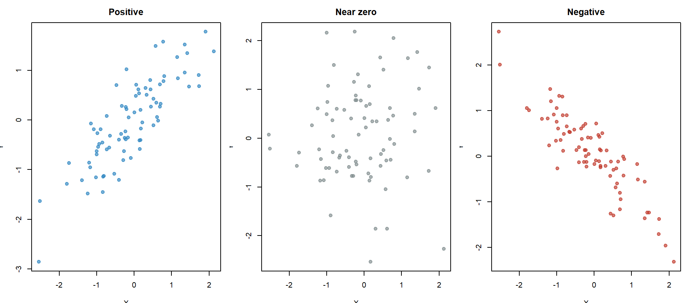
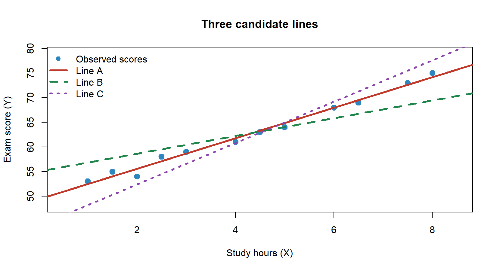

EPPS Math and Coding Camp
Probability and Regression
Instructor: Haien Peng

Our path today
Random variables, distributions, and moments
↓
Regression: scalar and matrix OLS
↓
Hypothesis testing: from a fair coin to an OLS slope
By the end, you should be able to read a probability distribution, summarize uncertainty, and understand how OLS estimates a regression.
Learning objectives
By the end of this session, you should be able to:
- distinguish discrete and continuous random variables;
- read a PMF and a PDF and draw a histogram;
- calculate Uniform and Normal interval probabilities;
- transform and standardize a Normal variable;
- compute expectation, variance, covariance, and correlation;
- derive and calculate simple OLS estimates with and without an intercept;
- write multiple regression in matrix form and calculate the OLS estimate;
- explain how a low-probability observation can challenge a null hypothesis;
- state the hypotheses in an OLS slope \(t\)-test and interpret its two tails.
1. Random variables, distributions, and moments
A random variable turns outcomes into numbers
A random variable is a rule
\[ X:\Omega\longrightarrow\mathbb R. \]
Example: toss a coin twice and let \(X\) be the number of heads.
\[ \begin{array}{c|cccc} \text{Outcome} & TT & HT & TH & HH\\ \hline X & 0 & 1 & 1 & 2 \end{array} \]
Discrete example 1: the number of heads has a PMF
For the number of heads in two fair tosses:
\[ \begin{array}{c|ccc} x & 0 & 1 & 2\\ \hline P(X=x) & 1/4 & 1/2 & 1/4 \end{array} \]
The probabilities must satisfy
\[ p_X(x)\ge0, \qquad \sum_xp_X(x)=1. \]
Discrete example 2: Bernoulli
A Bernoulli random variable records success as 1 and failure as 0:
\[ X=\begin{cases} 1, & \text{success},\\ 0, & \text{failure}. \end{cases} \]
If \(X\sim\operatorname{Bernoulli}(p)\), then
\[ p_X(1)=p, \qquad p_X(0)=1-p. \]
Example: \(X=1\) if a student passes and \(X=0\) otherwise.
Exercise 1: read a PMF
Let \(X\) be the number of heads in two fair tosses:
\[ \begin{array}{c|ccc} x & 0 & 1 & 2\\ \hline p_X(x) & 1/4 & 1/2 & 1/4 \end{array} \]
Find:
- \(P(X=1)\);
- \(P(X\ge1)\);
- \(P(X\le1)\).
Example: draw a histogram from frequencies
The sample is
\(4,\ 12,\ 15,\ 18,\ 22,\)
\(24,\ 25,\ 27,\ 31,\ 36.\)
Group the observations into intervals of width 10:
| Interval | Frequency |
|---|---|
| \([0,10)\) | 1 |
| \([10,20)\) | 3 |
| \([20,30)\) | 4 |
| \([30,40)\) | 2 |
Draw it by hand:
- put the intervals on the horizontal axis;
- use frequency as the height;
- draw touching rectangles.
Example solution: the rectangles touch

Exercise 2: draw a histogram
Use the same sample from the example:
\[ 4,\ 12,\ 15,\ 18,\ 22,\ 24,\ 25,\ 27,\ 31,\ 36. \]
Now use the narrower intervals below:
\[ [0,5),\ [5,10),\ [10,15),\ [15,20) \]
\[ [20,25),\ [25,30),\ [30,35),\ [35,40) \]
- Count the frequency in each interval.
- Draw the histogram using frequency as the height.
- Compare it with the histogram from the example.
Discrete variables use a PMF; continuous variables use a PDF
Discrete random variable
Takes separated values.
Examples: number of heads, number of children.
Use a probability mass function (PMF):
\[ p_X(x)=P(X=x). \]
\[ p_X(x)\ge0, \quad \sum_xp_X(x)=1. \]
Continuous random variable
Can take any value in an interval.
Examples: height, time, income.
Use a probability density function (PDF):
\[ f_X(x)\ge0. \]
\[ \int_{-\infty}^{\infty}f_X(x)\,dx=1. \]
For a PDF, area represents probability
For a continuous random variable,
\[ \boxed{P(a\le X\le b)=\int_a^b f_X(x)\,dx}. \]
The probability is the area under the PDF between \(a\) and \(b\).
At one exact value, there is no width and therefore no area:
\[P(X=x)=0.\]
The shaded area is an interval probability

The Uniform PDF has constant height
If \(X\sim\operatorname{Uniform}(a,b)\), then
\[ f_X(x)=\begin{cases} \dfrac{1}{b-a},&a\le x\le b,\\ 0,&\text{otherwise}. \end{cases} \]
The height is \(1/(b-a)\) so that the total rectangular area is
\[ (b-a)\frac{1}{b-a}=1. \]
Example: calculate a Uniform probability
Suppose
\[X\sim\operatorname{Uniform}(0,10).\]
Find \(P(2\le X\le5)\).
The PDF height is
\[\frac{1}{10-0}=0.1.\]
Therefore,
\[ P(2\le X\le5) =(5-2)(0.1) =0.3. \]
Continuous example 2: Normal
Write \(X\sim N(\mu,\sigma^2)\), where \(\mu\) sets the center and \(\sigma\) sets the spread.

Linear transformations of a Normal variable stay Normal
Suppose
\[X\sim N(\mu,\sigma^2).\]
For constants \(a\) and \(b\),
\[ \boxed{a+bX\sim N\!\left(a+b\mu,\;b^2\sigma^2\right)}. \]
Important special cases:
\[ X+a\sim N(\mu+a,\sigma^2), \qquad bX\sim N(b\mu,b^2\sigma^2). \]
Standardization is a Normal transformation
If
\[X\sim N(\mu,\sigma^2),\]
subtract the mean and divide by the standard deviation:
\[ \boxed{Z=\frac{X-\mu}{\sigma}\sim N(0,1)}. \]
The standardized value tells us how many standard deviations \(X\) is above or below its mean.
Example: a Normal interval after standardizing
Exam scores satisfy
\[X\sim N(70,10^2).\]
Let \(Z\sim N(0,1)\) and suppose you are given
\[P(-1\le Z\le1)=0.6827.\]
Find \(P(60\le X\le80)\).
Example solution: standardize both endpoints
Standardize both endpoints:
\[ \frac{60-70}{10}=-1, \qquad \frac{80-70}{10}=1. \]
Therefore,
\[ \begin{aligned} P(60\le X\le80) &=P(-1\le Z\le1)\\ &=0.6827. \end{aligned} \]
Exercise 3A: Uniform probability
Suppose
\[X\sim\operatorname{Uniform}(2,8).\]
- Plot the PDF.
- Calculate \(P(3\le X\le6)\).
Exercise 3B: transform a Normal variable
Suppose
\[X\sim N(50,5^2), \qquad Y=2X+10. \]
Let \(Z\sim N(0,1)\) and suppose
\[P(-1\le Z\le1)=0.6827.\]
- Find the distributions of \(X+10\), \(2X\), and \(Y\).
- Calculate \(P(100\le Y\le120)\).
Expectation is a probability-weighted average
For a discrete random variable,
\[ E(X)=\sum_x xP(X=x). \]
Expectation is the long-run average value across many repetitions.
It does not need to be one of the values that \(X\) can actually take.
Example: expected number of heads
For two fair tosses,
\[ \begin{array}{c|ccc} x & 0 & 1 & 2\\ \hline P(X=x) & 1/4 & 1/2 & 1/4 \end{array} \]
\[ \begin{aligned} E(X) &=0\left(\frac14\right) +1\left(\frac12\right) +2\left(\frac14\right)\\ &=1. \end{aligned} \]
Exercise 4: calculate an expectation
A simple investment has payoff \(X\):
\[ \begin{array}{c|ccc} x & -2 & 0 & 4\\ \hline P(X=x) & 0.25 & 0.50 & 0.25 \end{array} \]
- Verify that the probabilities sum to one.
- Find \(E(X)\).
- Is the expected payoff equal to the most likely payoff?
Expectation is linear
For constants \(a\) and \(b\),
\[ E(a+bX)=a+bE(X). \]
For two random variables,
\[ E(X+Y)=E(X)+E(Y), \]
whether or not \(X\) and \(Y\) are independent.
In general, \(E[g(X)]\ne g(E[X])\).
Variance measures spread around the mean
Let \(\mu=E(X)\). Then
\[ \operatorname{Var}(X)=E[(X-\mu)^2]. \]
An equivalent formula is
\[ \operatorname{Var}(X)=E(X^2)-[E(X)]^2. \]
The standard deviation is
\[ \operatorname{SD}(X)=\sqrt{\operatorname{Var}(X)}. \]
Example: variance of the number of heads
We already found \(E(X)=1\).
\[ E(X^2) =0^2\left(\frac14\right) +1^2\left(\frac12\right) +2^2\left(\frac14\right) =\frac32. \]
\[ \operatorname{Var}(X) =E(X^2)-[E(X)]^2 =\frac32-1^2 =\frac12. \]
Exercise 5: expectation and variance
Use the investment payoff:
\[ \begin{array}{c|ccc} x & -2 & 0 & 4\\ \hline P(X=x) & 0.25 & 0.50 & 0.25 \end{array} \]
Given \(E(X)=0.5\):
- calculate \(E(X^2)\);
- calculate \(\operatorname{Var}(X)\);
- calculate \(\operatorname{SD}(X)\).
A shift changes the mean but not the variance
For constants \(a\) and \(b\),
\[ E(a+bX)=a+bE(X), \]
\[ \operatorname{Var}(a+bX)=b^2\operatorname{Var}(X). \]
Adding \(a\) shifts every value equally, so spread does not change.
Multiplying by \(b\) changes every distance from the mean by \(|b|\).
Covariance describes how two variables move together
\[ \operatorname{Cov}(X,Y) =E[(X-E(X))(Y-E(Y))]. \]
Equivalently,
\[ \operatorname{Cov}(X,Y)=E(XY)-E(X)E(Y). \]
Positive: they tend to move in the same direction.
Negative: they tend to move in opposite directions.
Correlation puts covariance on a common scale
\[ \operatorname{Corr}(X,Y) =\frac{\operatorname{Cov}(X,Y)} {\operatorname{SD}(X)\operatorname{SD}(Y)}. \]
\[-1\le\operatorname{Corr}(X,Y)\le1.\]
Correlation measures the direction and strength of a linear relationship.
Correlation changes the shape of a scatter plot

Exercise 6: covariance and correlation
Three equally likely observations are
\[ \begin{array}{c|ccc} &1&2&3\\ \hline X&1&2&3\\ Y&1&3&2 \end{array} \]
Treat each column as having probability \(1/3\).
- Find \(E(X)\) and \(E(Y)\).
- Find \(\operatorname{Cov}(X,Y)\).
- Find \(\operatorname{Corr}(X,Y)\).
2. Regression: estimating a line
What is regression?
Regression uses a line to summarize how an outcome \(Y\) changes with an explanatory variable \(X\):
\[ Y_i=\beta_0+\beta_1X_i+u_i. \]
- \(\beta_0\): intercept;
- \(\beta_1\): slope;
- \(u_i\): the part of \(Y_i\) not described by the line.
From data, we estimate the line
\[ \widehat Y_i=\widehat\beta_0+\widehat\beta_1X_i. \]
Which line is best? What rule should decide?

Ordinary Least Squares minimizes squared residuals
For a candidate line \(b_0+b_1X_i\), the residual is
\[ e_i=Y_i-(b_0+b_1X_i). \]
Ordinary Least Squares (OLS) chooses \(b_0\) and \(b_1\) to minimize
\[ S(b_0,b_1) =\sum_{i=1}^n e_i^2 =\sum_{i=1}^n\left[Y_i-b_0-b_1X_i\right]^2. \]
Why square the residuals? Positive and negative errors cannot cancel, and large errors receive more weight.
Step 1: differentiate the OLS objective
The two first-order conditions are
\[ \frac{\partial S}{\partial b_0} =-2\sum_{i=1}^n(Y_i-b_0-b_1X_i)=0, \]
\[ \frac{\partial S}{\partial b_1} =-2\sum_{i=1}^nX_i(Y_i-b_0-b_1X_i)=0. \]
The first condition gives
\[ \widehat\beta_0=\overline Y-\widehat\beta_1\overline X. \]
Step 2: solve for the slope and intercept
Substitute \(\widehat\beta_0=\overline Y-\widehat\beta_1\overline X\) into the second first-order condition:
\[ \boxed{ \widehat\beta_1 =\frac{\sum_{i=1}^n(X_i-\overline X)(Y_i-\overline Y)} {\sum_{i=1}^n(X_i-\overline X)^2}} \]
Then calculate
\[ \boxed{\widehat\beta_0 =\overline Y-\widehat\beta_1\overline X}. \]
The fitted regression line is \(\widehat Y_i=\widehat\beta_0+\widehat\beta_1X_i\).
Example: study hours and exam scores
Suppose we observe four students:
\[ \begin{array}{c|rrrr} i&1&2&3&4\\ \hline X_i\text{ (hours)}&1&2&3&4\\ Y_i\text{ (score)}&52&53&55&56 \end{array} \]
Calculate the OLS slope and intercept.
First,
\[ \overline X=2.5, \qquad \overline Y=54. \]
Example solution: plug the data into the formulas
\[ \begin{array}{c|rr|rr|rr} i&X_i&Y_i&X_i-\bar X&Y_i-\bar Y& (X_i-\bar X)(Y_i-\bar Y)&(X_i-\bar X)^2\\ \hline 1&1&52&-1.5&-2&3&2.25\\ 2&2&53&-0.5&-1&0.5&0.25\\ 3&3&55&0.5&1&0.5&0.25\\ 4&4&56&1.5&2&3&2.25\\ \hline &&&&&7&5 \end{array} \]
\[ \widehat\beta_1=\frac75=1.4, \qquad \widehat\beta_0=54-(1.4)(2.5)=50.5. \]
\[ \boxed{\widehat Y=50.5+1.4X} \]
Exercise 7: OLS without an intercept
Suppose the fitted line is forced through the origin:
\[ Y_i=\beta X_i+u_i. \]
Starting from \(S(b)=\sum_{i=1}^n(Y_i-bX_i)^2\), differentiate with respect to \(b\) and show that
\[\widehat\beta=\frac{\sum_iX_iY_i}{\sum_iX_i^2}.\]
Use \(X=(1,2,3)\) and \(Y=(2,3,5)\) to calculate \(\widehat\beta\) and write the fitted line.
Multiple regression uses matrices
With several explanatory variables,
\[ \mathbf y=\mathbf X\boldsymbol\beta+\mathbf u. \]
\[ \mathbf y= \begin{bmatrix} y_1\\y_2\\\vdots\\y_n \end{bmatrix}_{n\times1}, \qquad \mathbf u= \begin{bmatrix} u_1\\u_2\\\vdots\\u_n \end{bmatrix}_{n\times1}. \]
Each row is one observation.
\[ \boldsymbol\beta= \begin{bmatrix} \beta_0\\\beta_1\\\vdots\\\beta_{k-1} \end{bmatrix}_{k\times1}. \]
Each entry is one coefficient.
The design matrix contains the explanatory variables
\[ \mathbf X= \begin{bmatrix} 1&X_{11}&X_{12}&\cdots&X_{1,k-1}\\ 1&X_{21}&X_{22}&\cdots&X_{2,k-1}\\ \vdots&\vdots&\vdots&\ddots&\vdots\\ 1&X_{n1}&X_{n2}&\cdots&X_{n,k-1} \end{bmatrix}_{n\times k}. \]
- one row for each observation;
- one column for each coefficient;
- the first column of ones produces the intercept \(\beta_0\).
For observation \(i\), the matrix equation reproduces
\[ Y_i=\beta_0+\beta_1X_{i1}+\cdots+\beta_{k-1}X_{i,k-1}+u_i. \]
Matrix OLS: write and expand the objective
OLS minimizes
\[ S(\mathbf b) =(\mathbf y-\mathbf X\mathbf b)' (\mathbf y-\mathbf X\mathbf b). \]
Expand the product:
\[ S(\mathbf b) =\mathbf y'\mathbf y -2\mathbf b'\mathbf X'\mathbf y +\mathbf b'\mathbf X'\mathbf X\mathbf b. \]
Matrix derivative rules
\[ \frac{\partial(\mathbf b'\mathbf c)}{\partial\mathbf b} =\mathbf c \]
\[ \frac{\partial(\mathbf b'\mathbf A\mathbf b)} {\partial\mathbf b} =(\mathbf A+\mathbf A')\mathbf b \]
If \(\mathbf A\) is symmetric, this is \(2\mathbf A\mathbf b\).
Matrix OLS: differentiate and solve
Differentiate:
\[ \frac{\partial S(\mathbf b)}{\partial\mathbf b} =-2\mathbf X'\mathbf y +2\mathbf X'\mathbf X\mathbf b. \]
Set the derivative equal to zero:
\[ \mathbf X'\mathbf X\widehat{\boldsymbol\beta} =\mathbf X'\mathbf y. \]
If \(\mathbf X'\mathbf X\) is invertible,
\[ \boxed{\widehat{\boldsymbol\beta} =(\mathbf X'\mathbf X)^{-1}\mathbf X'\mathbf y}. \]
Rules used
\[ \frac{\partial(\mathbf y'\mathbf y)}{\partial\mathbf b}=\mathbf0 \]
\[ \frac{\partial(-2\mathbf b'\mathbf X'\mathbf y)} {\partial\mathbf b}=-2\mathbf X'\mathbf y \]
\[ \frac{\partial(\mathbf b'\mathbf X'\mathbf X\mathbf b)} {\partial\mathbf b}=2\mathbf X'\mathbf X\mathbf b \]
Exercise 8: calculate matrix OLS
Let
\[ \mathbf X= \begin{bmatrix} 1&1\\ 1&2\\ 1&3 \end{bmatrix}_{3\times2}, \qquad \mathbf y= \begin{bmatrix} 2\\3\\5 \end{bmatrix}, \qquad \mathbf X'= \begin{bmatrix} 1&1&1\\ 1&2&3 \end{bmatrix}_{2\times3}. \]
- Calculate \(\mathbf X'\mathbf X\) and \(\mathbf X'\mathbf y\).
For Step 2, use
\[ \begin{bmatrix} 3&6\\ 6&14 \end{bmatrix}^{-1} =\frac16 \begin{bmatrix} 14&-6\\ -6&3 \end{bmatrix}. \]
- Use this inverse to calculate \(\widehat{\boldsymbol\beta}=(\mathbf X'\mathbf X)^{-1}\mathbf X'\mathbf y\).
- Write the fitted regression line.
3. Hypothesis testing
Is this coin-tossing game fair?
We play the following game:
- if heads appears more often, I win;
- if tails appears more often, you win.
If the coin is fair, both of us should have the same chance of winning.
We toss the coin 50 times and observe
\[ \boxed{48\text{ heads and }2\text{ tails}.} \]
Does the coin still look fair?
The null hypothesis gives us a reference distribution
Start by temporarily assuming that the coin is fair:
\[ H_0:p=0.5. \]
Under \(H_0\), \(X\) counts successes in 50 independent \(\operatorname{Bernoulli}(0.5)\) trials, so
\[ X\sim\operatorname{Binomial}(50,0.5). \]
If \(H_0\) is true, values near 25 heads are common. Values near 0 or 50 heads are rare.
A very small tail probability makes us doubt \(H_0\)
We observed \(X=48\). Under the fair-coin hypothesis,
\[ P(X\ge48\mid H_0) =\sum_{x=48}^{50}\binom{50}{x}(0.5)^{50} \approx1.13\times10^{-12}. \]
The observed result is extremely unlikely under \(H_0\).
Therefore, we reject the null hypothesis that the coin is fair.
This is the basic logic of a hypothesis test:
\[ \begin{aligned} \text{assumption} &\longrightarrow \text{reference distribution}\\ &\longrightarrow \text{tail probability} \longrightarrow \text{decision}. \end{aligned} \]
An OLS \(t\)-test asks whether the slope is zero
Test whether the population slope is zero:
\[ H_0:\beta_1=0, \qquad H_1:\beta_1\ne0. \]
Statistic:
\[ t=\frac{\widehat\beta_1-0} {SE(\widehat\beta_1)}. \]
\(SE(\widehat\beta_1)\) measures the uncertainty of \(\widehat\beta_1\).
Large \(|t|\) gives evidence against \(H_0\).
Any questions?